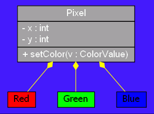
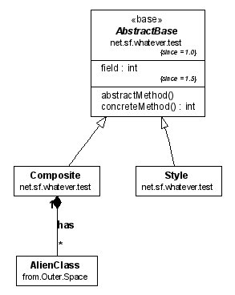

Last change: Tuesday, October 28, 2014 4:26 pm
Last change: Tuesday, October 28, 2014 4:26 pm
Unless otherwise expressly stated, all original material on this page created by Diomidis Spinellis is licensed under a Creative Commons Attribution-Share Alike 3.0 Greece License.
|
/**
* @opt edgecolor "yellow" * @opt nodefontname "Times" * @opt bgcolor ".7 .9 1" * @opt nodefillcolor "#a0a0a0" * @opt nodefontsize 14 * @hidden */ class UMLOptions{} /** * @opt nodefontname "Helvetica-Bold" * @opt nodefontcolor "white" * @composed - - - Red * @composed - - - Green * @composed - - - Blue * @opt attributes * @opt visibility * @opt types */ class Pixel { private int x, y; public void setColor(ColorValue v) {} } /** @opt nodefillcolor red */ class Red {} /** @opt nodefillcolor green */ class Green {} /** @opt nodefillcolor blue */ class Blue {} /** @hidden */ class ColorValue{} |  |
|
package net.sf.whatever.test;
/** * @hidden * @opt postfixpackage * @opt edgefontname arialbd * @opt nodefontname arial * @opt nodefontsize 9 * @opt nodefontabstract ariali * @opt nodefontclassname arialbd * @opt nodefontclassabstractname arialbi * @opt nodefonttagsize 6 * @opt nodefonttagname ariali * @opt nodefontpackagesize 8 * @opt operations * @opt attributes * @opt qualify * @opt types */ class UMLOptions{} /** * @stereotype base * @tagvalue since 1.0 */ abstract class AbstractBase { /** @tagvalue since 1.5 */ private int field; public abstract void abstractMethod(); public int concreteMethod() { return 1; } } /** * @composed 1 has * from.Outer.Space.AlienClass */ class Composite extends AbstractBase {} public class Style extends AbstractBase {} |  |
Last change: Tuesday, October 28, 2014 4:26 pm
Unless otherwise expressly stated, all original material on this page
created by Diomidis Spinellis is licensed under a
Creative Commons Attribution-Share Alike 3.0 Greece License.